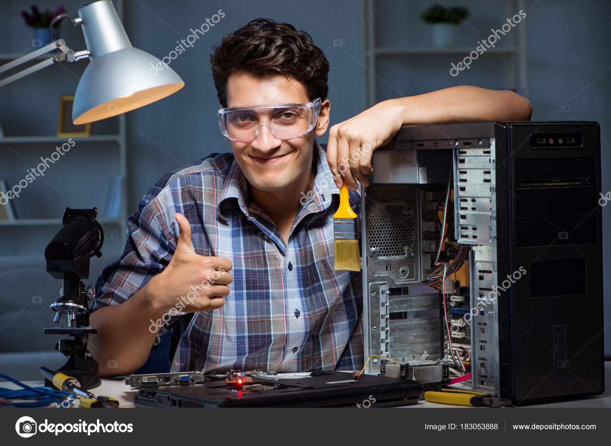

Home
About Us
Services
News
Products
FAQ
Home
About Us
Services
News
Products
FAQ
Tech-It Solutions is a computing repair service and computer parts seller that provides reliable and efficient solutions for all your computer-related needs. Our company is dedicated to providing exceptional services and high-quality computer parts to ensure our customers have the best computing experience. With years of experience in the industry, our team of experts is well-equipped to diagnose and repair any computer-related issues. In addition, we also offer a wide range of computer parts to cater to your specific needs. Our goal is to provide prompt and efficient services to ensure your computing needs are met with utmost satisfaction.
At Tech-It Solutions, we specialize in providing a range of services to keep your computers running smoothly. Our team of experts can build computers to your exact specifications, ensuring that you get the performance and features you need. In addition to building computers, we also provide repair services for all types of computer problems. Whether you're dealing with a software issue, a hardware failure, or a virus infection, our technicians can diagnose and fix the problem quickly and effectively. We use the latest tools and techniques to ensure that your computer is running at peak performance. If you need to upgrade your computer, we can help with that too. We offer a wide range of computer parts and accessories, including CPUs, GPUs, motherboards, hard drives, and more. Our team can help you find the right parts for your system and install them for you, so you can get the most out of your computer.
At Tech-It Solutions, our goal is to provide you with the highest level of service and support. Whether you need a new computer built, an existing computer repaired, or an upgrade to your system, we have the expertise and experience to get the job done right.
